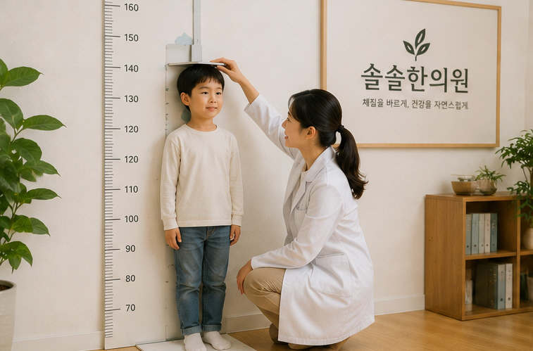
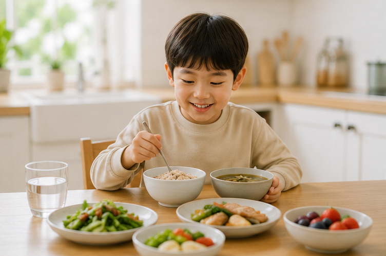

아이의 성장과 건강을 살펴볼 때는 키만 보는 것이 아니라 식사, 수면, 대소변, 활동량과 평소 건강 상태 를 함께 살펴보는 것이 중요합니다. 솔솔한의원 소아클리닉에서는 아이의 현재 상태와 생활습관을 종합적으로 살펴봅니다.
부모님께서 아이의 키를 걱정하며 내원하시지만, 진료실에서는 키뿐 아니라 아이가 평소 어떻게 먹고, 어떻게 자며, 대소변은 편안한지 등을 함께 확인합니다.
식욕과 소화 상태, 식사량과 식습관 등을 함께 살펴봅니다.
충분한 수면시간뿐 아니라 자주 깨지는 않는지, 편안하게 숙면하는지도 중요합니다.
변비, 설사, 잦은 복통 등 대소변 상태도 아이의 전반적인 건강을 살펴보는 중요한 부분입니다.

아이들은 같은 나이라도 식사량, 체격, 수면, 소화 상태와 평소 건강 상태가 모두 다릅니다. 현재 아이에게 어떤 부분이 필요한지를 먼저 살펴봅니다.
현재 키와 체중뿐 아니라 식사, 수면, 운동, 생활습관 등을 함께 확인합니다.
밥을 잘 먹지 않거나 자주 체하고, 복통이나 변비·설사가 반복되는 경우 소화 상태를 함께 살펴봅니다.
환절기마다 감기가 반복되거나 콧물, 코막힘 등 비염 증상으로 불편해하는 아이를 진료합니다.
잠들기 어렵거나 자주 깨는 경우, 쉽게 피곤해하고 활동량이 떨어지는 경우 등 전반적인 상태를 확인합니다.

성장기 아이에게는 다양한 영양소를 골고루 섭취하는 것이 중요합니다. 특정 음식 하나가 키를 크게 만들어주는 것은 아니므로 규칙적인 식사와 균형 잡힌 식습관을 먼저 만들어주는 것이 좋습니다.
아이가 밥을 지나치게 적게 먹거나, 식사 때마다 복통이나 메스꺼움을 호소하거나, 변비·설사가 반복된다면 단순히 많이 먹이려고 하기보다 현재 소화 상태를 함께 살펴볼 필요가 있습니다.
성장과 관련해 부모님들이 많이 물어보시는 질문 중 하나가 “밤 10시 전에 꼭 자야 하나요?”입니다.
특정 시간만을 지나치게 의식하기보다는 아이가 연령에 맞는 충분한 수면을 취하고 있는지, 잠든 뒤 자주 깨지는 않는지, 편안하게 숙면하고 있는지를 함께 살펴보는 것이 좋습니다.
밥을 잘 먹지 않고 소화가 불편한 아이, 감기나 비염이 자주 반복되는 아이, 수면이나 땀, 기력 등의 문제가 함께 있는 아이처럼 현재 상태는 서로 다를 수 있습니다.
솔솔한의원에서는 식욕, 소화, 수면, 대소변, 활동량과 전반적인 상태를 진료한 뒤 필요한 경우 아이의 상태에 맞는 한약 처방을 상담합니다.
녹용을 비롯한 약재 역시 모든 아이에게 동일하게 사용하는 것이 아니라 진료 후 아이의 상태와 처방 목적에 따라 사용 여부를 결정합니다.
성장과 건강 관리의 기본은 매일 반복되는 생활습관에서 시작됩니다.
소아 성장과 건강에 대해 진료실에서 자주 듣는 질문들을 정리했습니다.
유전적인 요인은 성장에 중요한 영향을 미치지만 성장에는 영양, 수면, 운동, 전반적인 건강 상태 등 여러 요소가 함께 관여합니다.
따라서 부모님의 키만으로 아이의 최종 키를 단정하기보다는 현재 성장 상태와 생활습관을 함께 살펴보는 것이 좋습니다.
쉽게 말씀드리면 잘 먹고, 잘 자고, 잘 배출하는 것입니다.
여기에 규칙적인 운동과 충분한 신체활동을 더하고, 아이가 불편해하는 증상이 있다면 그 원인을 함께 살펴보는 것이 좋습니다.
특정 시간 하나만으로 성장 여부가 결정되는 것은 아닙니다. 충분한 수면시간과 수면의 질이 중요합니다.
아이가 늦게까지 깨어 있거나 자다가 자주 깨고, 아침에 일어나기 어려워한다면 수면시간과 수면환경을 점검해보는 것이 좋습니다.
성장기에는 규칙적인 신체활동이 중요하지만 무조건 강도가 높은 운동을 많이 하는 것이 좋은 것은 아닙니다.
걷기, 달리기, 줄넘기, 자전거, 수영, 구기운동 등 아이가 즐겁게 지속할 수 있는 다양한 운동을 규칙적으로 하는 것이 좋습니다.
그렇다고 단정할 수 없습니다. 성장기에는 적절한 체중 증가가 필요하지만 지나친 체중 증가는 별도로 관리할 필요가 있습니다.
단순히 많이 먹이는 것보다는 아이의 키와 체중 변화, 식습관과 활동량을 함께 살펴보는 것이 중요합니다.
먼저 식사시간과 간식 습관을 살펴보는 것이 좋습니다. 아이가 식사 때마다 복통, 더부룩함, 메스꺼움, 변비나 설사 등을 함께 호소하는지도 확인합니다.
식욕부진이 지속되거나 체중 증가가 원활하지 않다면 아이의 소화 상태와 전반적인 건강 상태를 진료를 통해 확인해볼 수 있습니다.
네. 소아의 감기, 콧물, 코막힘, 비염 등의 증상도 함께 진료할 수 있습니다.
이러한 증상이 반복되면서 식욕이나 수면 등 일상생활에 불편을 주고 있는지도 함께 살펴봅니다.
모든 아이에게 동일한 성장한약을 처방하는 것은 아닙니다.
식욕과 소화 상태, 수면, 대소변, 체격, 활동량과 현재 불편한 증상 등을 확인한 뒤 한약이 필요한지 상담하고 아이의 상태에 맞춰 처방합니다.
녹용이 모든 아이에게 반드시 필요한 것은 아닙니다. 아이의 현재 상태와 처방 목적에 따라 사용 여부가 달라질 수 있습니다.
특정 약재를 임의로 복용하기보다는 진료 후 아이에게 적절한 처방인지 상담받는 것이 좋습니다.
네. 아이의 성장 속도는 연령과 성별, 유전적 요인, 사춘기 시기 등 여러 요소에 따라 차이가 날 수 있습니다.
한 번의 키 측정만으로 판단하기보다는 일정 기간 동안 키와 체중이 어떻게 변화하고 있는지를 함께 살펴보는 것이 중요합니다.
솔솔한의원의 두 한의사 역시 아이를 키우고 있는 부모입니다.
부모님께서 아이의 식사 한 끼, 잠드는 시간 하나까지 걱정하게 되는 마음을 알기에 키 숫자 하나만 보기보다는 아이의 일상과 현재 불편한 부분을 함께 듣고 살펴보겠습니다.